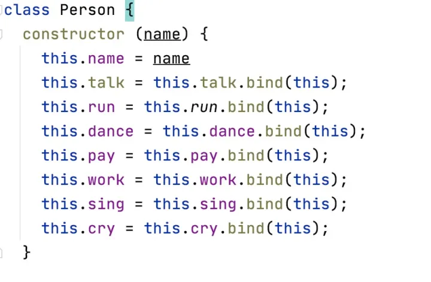

<!DOCTYPE html>


<html lang="zh-CN">


<head>
  <meta charset="utf-8" />
   
  <meta name="keywords" content="翟天野 天野 翟天野博客 tianye zhaitianye" />
   
  <meta name="description" content="The seeker of the world" />
  
  <meta name="viewport" content="width=device-width, initial-scale=1, maximum-scale=1" />
  <title>
    JavaScript中使用Class的优劣 |  Tianye Blog
  </title>
  <meta name="generator" content="hexo-theme-ayer">
  
  <link rel="shortcut icon" href="/favicon.ico" />
  
  
<link rel="stylesheet" href="/dist/main.css">

  
<link rel="stylesheet" href="/comm/remixicon.min.css">

  
<link rel="stylesheet" href="/css/custom.css">

  
  
<script src="/comm/pace.min.js"></script>

  
  

  

</head>

</html>

<body>
  <div id="app">
    
      
      <canvas width="1777" height="841"
        style="position: fixed; left: 0px; top: 0px; z-index: 99999; pointer-events: none;"></canvas>
      
    <main class="content on">
      <section class="outer">
  <article
  id="post-JavaScript中使用Class的优劣"
  class="article article-type-post"
  itemscope
  itemprop="blogPost"
  data-scroll-reveal
>
  <div class="article-inner">
    
    <header class="article-header">
       
<h1 class="article-title sea-center" style="border-left:0" itemprop="name">
  JavaScript中使用Class的优劣
</h1>
 

    </header>
     
    <div class="article-meta">
      <a href="/2019/10/JavaScript%E4%B8%AD%E4%BD%BF%E7%94%A8Class%E7%9A%84%E4%BC%98%E5%8A%A3/" class="article-date">
  <time datetime="2019-10-22T05:15:23.000Z" itemprop="datePublished">2019-10-22</time>
</a> 
  <div class="article-category">
    <a class="article-category-link" href="/categories/JavaScript/">JavaScript</a>
  </div>
  
<div class="word_count">
    <span class="post-time">
        <span class="post-meta-item-icon">
            <i class="ri-quill-pen-line"></i>
            <span class="post-meta-item-text"> 字数统计:</span>
            <span class="post-count">3.2k</span>
        </span>
    </span>

    <span class="post-time">
        &nbsp; | &nbsp;
        <span class="post-meta-item-icon">
            <i class="ri-book-open-line"></i>
            <span class="post-meta-item-text"> 阅读时长≈</span>
            <span class="post-count">12 分钟</span>
        </span>
    </span>
</div>
 
    </div>
      
    <div class="tocbot"></div>


  
    <div class="article-entry" itemprop="articleBody">
       
  <h2 id="看似无处不在的OOP"><a href="#看似无处不在的OOP" class="headerlink" title="看似无处不在的OOP"></a>看似无处不在的OOP</h2><p>OOP 即 面向对象编程 （Object Oriented Programming）毫无疑问是软件设计和发展中的一大进步。事实上，一些编程语言如 Java 、C++ 就是基于 OOP 的核心概念 class 开发出来。</p>
<p>在高校的 CS 相关专业中，无论教授什么编程语言，OOP的学习是绝对不会被落下的。</p>
<p>同时，OOP在业界中也的确被大量使用，尤其是的后端服务领域、桌面软件、移动APP开发等。</p>
<p>因此，OOP看起来在软件行业无处不在，在这种有点教条主义的氛围下，很多程序员甚至以为 class 是编程固有的概念 —— 然而并不是。</p>
<p>OOP 只是一套帮助开发者设计和编写软件的方法论，但并不代表它能解决所有领域的问题，也不是能在所有编程语言的任何场景下都适用。我们应避免陷入这种教条主义。</p>
<h2 id="JavaScript中使用Class的坑"><a href="#JavaScript中使用Class的坑" class="headerlink" title="JavaScript中使用Class的坑"></a>JavaScript中使用Class的坑</h2><p>ES6 之后，JavaScript 也引入了 class 关键字用于声明一个类。但需要注意的是，这样声明出来的类其实在底层还是使用了 JavaScript 的函数 和 原型链 （来模拟类的行为）</p>
<p>看个例子：</p>
<figure class="highlight js"><table><tr><td class="gutter"><pre><span class="line">1</span><br><span class="line">2</span><br><span class="line">3</span><br><span class="line">4</span><br><span class="line">5</span><br><span class="line">6</span><br><span class="line">7</span><br><span class="line">8</span><br><span class="line">9</span><br></pre></td><td class="code"><pre><span class="line"><span class="class"><span class="keyword">class</span> <span class="title">Person</span> </span>&#123;</span><br><span class="line">  <span class="keyword">constructor</span> (name) &#123;</span><br><span class="line">    <span class="keyword">this</span>.name = name</span><br><span class="line">  &#125;</span><br><span class="line">  </span><br><span class="line">  talk () &#123;</span><br><span class="line">    <span class="built_in">console</span>.log(<span class="string">`<span class="subst">$&#123;<span class="keyword">this</span>.name&#125;</span> says hello`</span>)</span><br><span class="line">  &#125;</span><br><span class="line">&#125;</span><br></pre></td></tr></table></figure>

<p>上面的代码在底层实现时，非常接近于</p>
<figure class="highlight js"><table><tr><td class="gutter"><pre><span class="line">1</span><br><span class="line">2</span><br><span class="line">3</span><br><span class="line">4</span><br><span class="line">5</span><br><span class="line">6</span><br></pre></td><td class="code"><pre><span class="line"><span class="function"><span class="keyword">function</span> <span class="title">Person</span> (<span class="params">name</span>) </span>&#123;</span><br><span class="line">  <span class="keyword">this</span>.name = name</span><br><span class="line">&#125;</span><br><span class="line">Person.prototype.talk = <span class="function"><span class="keyword">function</span> (<span class="params"></span>) </span>&#123;</span><br><span class="line">  <span class="built_in">console</span>.log(<span class="string">`<span class="subst">$&#123;<span class="keyword">this</span>.name&#125;</span> says hello`</span>)</span><br><span class="line">&#125;</span><br></pre></td></tr></table></figure>

<p>这边可以注意到 talk 其实并不是一个Person类内部封装的方法，而只是一个常规的JavaScript函数，赋值到了Person的原型上而已。因此，talk 函数里的 this 对应的是调用时的上下文而不是定义时的上下文，这点跟 Java 和 C++ 的差别很大。</p>
<p>这种差异最明显的影响是在别的对象试图调用这个对象的talk时</p>
<figure class="highlight js"><table><tr><td class="gutter"><pre><span class="line">1</span><br><span class="line">2</span><br><span class="line">3</span><br><span class="line">4</span><br></pre></td><td class="code"><pre><span class="line"><span class="keyword">const</span> Grey = <span class="keyword">new</span> Person(<span class="string">'Grey'</span>)</span><br><span class="line"><span class="keyword">const</span> mockDomButton = &#123;&#125; <span class="comment">// 模拟一个DOM上的按钮对象</span></span><br><span class="line">mockDomButton.onClick = Grey.talk; <span class="comment">// 绑定点击事件</span></span><br><span class="line">mockDomButton.onClick() <span class="comment">// 输出的结果是 undefined says hello</span></span><br></pre></td></tr></table></figure>

<p>上面这段模拟代码输出的结果并不是我们想要的。原因是 onClick 被调用时，其实是 talk 函数在执行，且talk 函数的this 指向的是 mockDomButton 而不是 Grey ，mockDomButton 并没有 name 属性于是 输出了 undefined says hello</p>
<p>这种“特殊”的表现让很多 JavaScript 新手感到头疼，尤其是那些从 Java 或者 C++ 背景过来的新手前端程序员。</p>
<p>解决这个问题的办法当然是有的，先介绍两个仍然使用 class 的方案</p>
<h3 id="方案一："><a href="#方案一：" class="headerlink" title="方案一："></a>方案一：</h3><p>使用函数的 bind 方法</p>
<blockquote>
<p><strong>bind()</strong>方法创建一个新的函数，在bind()被调用时，这个新函数的this被指定为bind()的第一个参数</p>
</blockquote>
<p>修改 Person.js 文件如下</p>
<figure class="highlight js"><table><tr><td class="gutter"><pre><span class="line">1</span><br><span class="line">2</span><br><span class="line">3</span><br><span class="line">4</span><br><span class="line">5</span><br><span class="line">6</span><br><span class="line">7</span><br><span class="line">8</span><br><span class="line">9</span><br><span class="line">10</span><br></pre></td><td class="code"><pre><span class="line"><span class="class"><span class="keyword">class</span> <span class="title">Person</span> </span>&#123;</span><br><span class="line">  <span class="keyword">constructor</span> (name) &#123;</span><br><span class="line">    <span class="keyword">this</span>.name = name</span><br><span class="line">    <span class="keyword">this</span>.talk = <span class="keyword">this</span>.talk.bind(<span class="keyword">this</span>); <span class="comment">// 在构造器里显式调用 bind 函数绑定 this</span></span><br><span class="line">  &#125;</span><br><span class="line"></span><br><span class="line">  talk () &#123;</span><br><span class="line">    <span class="built_in">console</span>.log(<span class="string">`<span class="subst">$&#123;<span class="keyword">this</span>.name&#125;</span> says hello`</span>)</span><br><span class="line">  &#125;</span><br><span class="line">&#125;</span><br></pre></td></tr></table></figure>

<p>再次运行上面的测试代码，这次的输出就是正确的了 —— Grey says hello</p>
<p>这种方案的缺点就是需要繁琐地写这种 bind 方法调用语句，当这个类的方法很多时，会显得构造器非常臃肿，降低可读性和编码效率如</p>
<p></p>
<h3 id="方案二："><a href="#方案二：" class="headerlink" title="方案二："></a>方案二：</h3><p>使用类属性+箭头函数的方式来定义方法</p>
<p>即</p>
<figure class="highlight js"><table><tr><td class="gutter"><pre><span class="line">1</span><br><span class="line">2</span><br><span class="line">3</span><br><span class="line">4</span><br><span class="line">5</span><br><span class="line">6</span><br><span class="line">7</span><br><span class="line">8</span><br><span class="line">9</span><br></pre></td><td class="code"><pre><span class="line"><span class="class"><span class="keyword">class</span> <span class="title">Person</span> </span>&#123;</span><br><span class="line">  <span class="keyword">constructor</span>(name) &#123;</span><br><span class="line">    <span class="keyword">this</span>.name = name</span><br><span class="line">  &#125;</span><br><span class="line"></span><br><span class="line">  talk = <span class="function"><span class="params">()</span> =&gt;</span> &#123;</span><br><span class="line">    <span class="built_in">console</span>.log(<span class="string">`<span class="subst">$&#123;<span class="keyword">this</span>.name&#125;</span> says hello`</span>)</span><br><span class="line">  &#125;</span><br><span class="line">&#125;</span><br></pre></td></tr></table></figure>

<p>这种语法是 ES2017 才引入的，它等效于</p>
<figure class="highlight js"><table><tr><td class="gutter"><pre><span class="line">1</span><br><span class="line">2</span><br><span class="line">3</span><br><span class="line">4</span><br><span class="line">5</span><br><span class="line">6</span><br><span class="line">7</span><br><span class="line">8</span><br></pre></td><td class="code"><pre><span class="line"><span class="class"><span class="keyword">class</span> <span class="title">Person</span> </span>&#123;</span><br><span class="line">  <span class="keyword">constructor</span>(name) &#123;</span><br><span class="line">    <span class="keyword">this</span>.name = name</span><br><span class="line">    <span class="keyword">this</span>.talk = <span class="function"><span class="params">()</span> =&gt;</span> &#123;</span><br><span class="line">      <span class="built_in">console</span>.log(<span class="string">`<span class="subst">$&#123;<span class="keyword">this</span>.name&#125;</span> says hello`</span>)</span><br><span class="line">    &#125;</span><br><span class="line">  &#125;</span><br><span class="line">&#125;</span><br></pre></td></tr></table></figure>

<p>运行测试代码，依然能成功输出 Grey says hello</p>
<p>但是，这种方案也有缺点 —— 由于它等效于函数定义放在了构造器内，所以</p>
<p>一、这个方法不在原型链上，即 Person.prototype.talk 的值是undefined ，所以这个类的子类并不能使用 super.talk() 调用到父类这个方法，所以下面这段代码会报错</p>
<figure class="highlight js"><table><tr><td class="gutter"><pre><span class="line">1</span><br><span class="line">2</span><br><span class="line">3</span><br><span class="line">4</span><br><span class="line">5</span><br><span class="line">6</span><br><span class="line">7</span><br><span class="line">8</span><br><span class="line">9</span><br></pre></td><td class="code"><pre><span class="line"><span class="class"><span class="keyword">class</span> <span class="title">Student</span> <span class="keyword">extends</span> <span class="title">Person</span> </span>&#123;</span><br><span class="line">  talk = <span class="function"><span class="params">()</span> =&gt;</span> &#123;</span><br><span class="line">    <span class="keyword">super</span>.talk(); <span class="comment">// 报错</span></span><br><span class="line">    <span class="built_in">console</span>.log(<span class="string">"student talk hi"</span>);</span><br><span class="line">  &#125;</span><br><span class="line">&#125;</span><br><span class="line"></span><br><span class="line"><span class="keyword">const</span> student = <span class="keyword">new</span> Student(<span class="string">'Tom'</span>);</span><br><span class="line">student.talk();</span><br></pre></td></tr></table></figure>

<p>二、每次创建一个 Person 实例都会创建一个 talk 函数，造成性能浪费 （仅仅是用来与方案一对比）</p>
<figure class="highlight js"><table><tr><td class="gutter"><pre><span class="line">1</span><br><span class="line">2</span><br><span class="line">3</span><br></pre></td><td class="code"><pre><span class="line"><span class="keyword">const</span> Grey = <span class="keyword">new</span> Person(<span class="string">'Grey'</span>)</span><br><span class="line"><span class="keyword">const</span> Tom = <span class="keyword">new</span> Person(<span class="string">'Tom'</span>)</span><br><span class="line"><span class="built_in">console</span>.log(Grey.talk === Tom.talk); <span class="comment">//  输出 false</span></span><br></pre></td></tr></table></figure>

<p>在 JavaScript 中使用类居然有上面这么多坑，那何不试试其他方案？</p>
<p>首先，我们回到源头想想什么是类，我们想利用类达到什么目的：</p>
<p>大多数时候，我们定义的类 其实是 创建对象的蓝图（模板） —— 我们先规划好一个类的模样，之后通过 new 的方式创建出许许多多的对象，每个对象都符合我们想要的格式（即属性，方法）</p>
<p>在 JavaScript 中，我们还有其他方案可以达到这个目的</p>
<h2 id="工厂函数（factory-functions）"><a href="#工厂函数（factory-functions）" class="headerlink" title="工厂函数（factory functions）"></a>工厂函数（factory functions）</h2><figure class="highlight js"><table><tr><td class="gutter"><pre><span class="line">1</span><br><span class="line">2</span><br><span class="line">3</span><br><span class="line">4</span><br><span class="line">5</span><br><span class="line">6</span><br><span class="line">7</span><br></pre></td><td class="code"><pre><span class="line"><span class="keyword">const</span> PersonFactory = <span class="function">(<span class="params">name</span>) =&gt;</span> &#123;</span><br><span class="line">  <span class="keyword">return</span> &#123;</span><br><span class="line">    talk: <span class="function"><span class="params">()</span> =&gt;</span> &#123;</span><br><span class="line">      <span class="built_in">console</span>.log(<span class="string">`<span class="subst">$&#123;name&#125;</span> says Hello`</span>)</span><br><span class="line">    &#125;</span><br><span class="line">  &#125;</span><br><span class="line">&#125;</span><br></pre></td></tr></table></figure>

<p>PersonFactory 是个简单的工厂函数，它返回一个对象，这个对象拥有一个 talk 方法</p>
<figure class="highlight js"><table><tr><td class="gutter"><pre><span class="line">1</span><br><span class="line">2</span><br><span class="line">3</span><br><span class="line">4</span><br></pre></td><td class="code"><pre><span class="line"><span class="keyword">const</span> Grey = PersonFactory(<span class="string">'Grey'</span>); <span class="comment">// 使用工厂函数生成对象</span></span><br><span class="line"><span class="keyword">const</span> mockDomButton = &#123;&#125; <span class="comment">// 模拟一个DOM上的按钮对象</span></span><br><span class="line">mockDomButton.onClick = Grey.talk; <span class="comment">// 绑定点击事件</span></span><br><span class="line">mockDomButton.onClick() <span class="comment">// 输出的结果是 Grey says Hello</span></span><br></pre></td></tr></table></figure>

<p>由于JavaScript的闭包特性，name已经被封装在了函数里，所以上面的测试代码可以正常运作。而且更赞的是，这个方案中，name甚至自动成为了私有的变量，不怕被更改（上面的那些 class 方案里 name 都可以被公共访问的）</p>
<p>而且相比之下，工厂函数的代码更简洁易读，也不需要考虑 this 的繁琐问题。</p>
<p>因此，如果只是为了给对象创建绘制蓝图（模板），工厂函数是比类更合适的方案。</p>
<h2 id="继承"><a href="#继承" class="headerlink" title="继承"></a>继承</h2><p>类的另一个特征是继承机制，子类可以继承（分享）来自父类的属性和方法。</p>
<p>如果仅仅是共享属性和方法，使用组合（composition）也可以很容易实现</p>
<figure class="highlight js"><table><tr><td class="gutter"><pre><span class="line">1</span><br><span class="line">2</span><br><span class="line">3</span><br><span class="line">4</span><br><span class="line">5</span><br><span class="line">6</span><br><span class="line">7</span><br><span class="line">8</span><br><span class="line">9</span><br><span class="line">10</span><br><span class="line">11</span><br><span class="line">12</span><br><span class="line">13</span><br><span class="line">14</span><br><span class="line">15</span><br><span class="line">16</span><br><span class="line">17</span><br></pre></td><td class="code"><pre><span class="line"><span class="keyword">const</span> Workable = &#123;</span><br><span class="line">  inOffice: <span class="literal">true</span></span><br><span class="line">&#125;</span><br><span class="line"><span class="keyword">const</span> WorkablePersonFactory = <span class="function">(<span class="params">name</span>) =&gt;</span> (</span><br><span class="line">  <span class="built_in">Object</span>.assign(</span><br><span class="line">    &#123;&#125;,</span><br><span class="line">    Workable,</span><br><span class="line">    PersonFactory(name)</span><br><span class="line">  )</span><br><span class="line">)</span><br><span class="line"><span class="comment">// 或者</span></span><br><span class="line"><span class="keyword">const</span> WorkablePersonFactory = <span class="function">(<span class="params">name</span>) =&gt;</span> (</span><br><span class="line">    &#123;</span><br><span class="line">     ... Workable,</span><br><span class="line">     ...PersonFactory(name),</span><br><span class="line">    &#125;</span><br><span class="line">)</span><br></pre></td></tr></table></figure>

<p>上面的代码意图十分明显，可读性很高，这也是组合模式的一个优点。</p>
<p>当然，对于某些更复杂的类使用场景，工厂函数并不能替代类。</p>
<h2 id="关注代码表达性而不是死守教条主义"><a href="#关注代码表达性而不是死守教条主义" class="headerlink" title="关注代码表达性而不是死守教条主义"></a>关注代码表达性而不是死守教条主义</h2><p>在 JavaScript 的现实场景中，尤其是前端代码，我们很少真正用到类继承，大多数时候，工厂函数就能完成我们的目标。</p>
<p>以React为例，官方这几年推崇 Hooks 的意图也很明显 —— 摆脱JavaScript class 带来的复杂性，拥抱函数式风格。</p>
<p>由于 JavaScript 实现的特殊性，在 JavaScript 应用中使用 class 对于一些程序员来说有许多坑，于此同时，大多数场景下其他替代方案如 工厂函数 可能更契合JavaScript的特性，反而带来更好的效果。</p>
<p>当然，并不是一杆子打死 JavaScript 的 class，在一些特别适合 OOP 的场景中，依然鼓励使用 class 。</p>
<p>总之，不要被教条主义所束缚，牢记编写程序最重要的两点是：</p>
<ul>
<li>真正将需求转化成了代码</li>
<li>写出可读的，容易维护的，方便理解的代码</li>
</ul>
<h2 id="bind-以外的其他方案"><a href="#bind-以外的其他方案" class="headerlink" title="bind 以外的其他方案"></a>bind 以外的其他方案</h2><blockquote>
<p>class fields或者autobind decorator都有很多问题，而且这两者还不是最终标准，建议不要用</p>
</blockquote>
<h2 id="关于-工厂函数-的举例"><a href="#关于-工厂函数-的举例" class="headerlink" title="关于 工厂函数 的举例"></a>关于 工厂函数 的举例</h2><p>首先这个例子主要是针对这种场景 ——在 JavaScript 给创建某类对象定制一个标准，以便可以用这个 模板 创建许多对象</p>
<p>这个例子的确还不够亮眼，那我再举个更实际的例子吧</p>
<figure class="highlight js"><table><tr><td class="gutter"><pre><span class="line">1</span><br><span class="line">2</span><br><span class="line">3</span><br><span class="line">4</span><br><span class="line">5</span><br><span class="line">6</span><br><span class="line">7</span><br><span class="line">8</span><br><span class="line">9</span><br><span class="line">10</span><br><span class="line">11</span><br><span class="line">12</span><br><span class="line">13</span><br><span class="line">14</span><br><span class="line">15</span><br><span class="line">16</span><br><span class="line">17</span><br><span class="line">18</span><br><span class="line">19</span><br><span class="line">20</span><br><span class="line">21</span><br><span class="line">22</span><br><span class="line">23</span><br><span class="line">24</span><br><span class="line">25</span><br><span class="line">26</span><br><span class="line">27</span><br><span class="line">28</span><br></pre></td><td class="code"><pre><span class="line"><span class="function"><span class="keyword">function</span> <span class="title">httpClientFactory</span>(<span class="params">baseUrl</span>) </span>&#123;</span><br><span class="line">  <span class="keyword">return</span> &#123;</span><br><span class="line">    baseUrl: baseUrl,</span><br><span class="line">    listUsers: <span class="function"><span class="params">()</span> =&gt;</span> &#123;</span><br><span class="line">      <span class="keyword">return</span> axios.get(<span class="string">`<span class="subst">$&#123;baseUrl&#125;</span>/users`</span>)</span><br><span class="line">    &#125;,</span><br><span class="line">    getUser: <span class="function">(<span class="params">id</span>) =&gt;</span> &#123;</span><br><span class="line">      <span class="keyword">return</span> axios.get(<span class="string">`<span class="subst">$&#123;baseUrl&#125;</span>/users/<span class="subst">$&#123;id&#125;</span>`</span>)</span><br><span class="line">    &#125;,</span><br><span class="line">    createUser: <span class="function">(<span class="params">user</span>) =&gt;</span> &#123;</span><br><span class="line">      <span class="keyword">return</span> axios.post(<span class="string">`<span class="subst">$&#123;baseUrl&#125;</span>/users`</span>, user);</span><br><span class="line">    &#125;,</span><br><span class="line">    listBooks: <span class="function"><span class="params">()</span> =&gt;</span> &#123;</span><br><span class="line">      <span class="keyword">return</span> axios.get(<span class="string">`<span class="subst">$&#123;baseUrl&#125;</span>/books`</span>)</span><br><span class="line">    &#125;,</span><br><span class="line">    getBook: <span class="function">(<span class="params">bookName</span>) =&gt;</span> &#123;</span><br><span class="line">      <span class="keyword">return</span> axios.get(<span class="string">`<span class="subst">$&#123;baseUrl&#125;</span>/books/<span class="subst">$&#123;bookName&#125;</span>`</span>)</span><br><span class="line">    &#125;,</span><br><span class="line">    createBook: <span class="function">(<span class="params">book</span>) =&gt;</span> &#123;</span><br><span class="line">      <span class="keyword">return</span> axios.post(<span class="string">`<span class="subst">$&#123;baseUrl&#125;</span>/books`</span>, book)</span><br><span class="line">    &#125;</span><br><span class="line">  &#125;</span><br><span class="line">&#125;</span><br><span class="line"></span><br><span class="line"><span class="keyword">const</span> httpClient = httpClientFactory(<span class="string">"https://your-endpoints/api"</span>);</span><br><span class="line">httpClient.getUser(<span class="string">"123"</span>);</span><br><span class="line">httpClient.getBook(<span class="string">"JavaScript Is Interesting"</span>);</span><br><span class="line"><span class="built_in">console</span>.log(<span class="string">"The httpClient's baseUrl is "</span> + httpClient.baseUrl);</span><br></pre></td></tr></table></figure>

<p>对比</p>
<figure class="highlight js"><table><tr><td class="gutter"><pre><span class="line">1</span><br><span class="line">2</span><br><span class="line">3</span><br><span class="line">4</span><br><span class="line">5</span><br><span class="line">6</span><br><span class="line">7</span><br><span class="line">8</span><br><span class="line">9</span><br><span class="line">10</span><br><span class="line">11</span><br><span class="line">12</span><br><span class="line">13</span><br><span class="line">14</span><br><span class="line">15</span><br><span class="line">16</span><br><span class="line">17</span><br><span class="line">18</span><br><span class="line">19</span><br><span class="line">20</span><br><span class="line">21</span><br><span class="line">22</span><br><span class="line">23</span><br><span class="line">24</span><br><span class="line">25</span><br><span class="line">26</span><br><span class="line">27</span><br><span class="line">28</span><br><span class="line">29</span><br><span class="line">30</span><br><span class="line">31</span><br><span class="line">32</span><br><span class="line">33</span><br><span class="line">34</span><br><span class="line">35</span><br><span class="line">36</span><br><span class="line">37</span><br><span class="line">38</span><br><span class="line">39</span><br><span class="line">40</span><br></pre></td><td class="code"><pre><span class="line"><span class="class"><span class="keyword">class</span> <span class="title">HttpClient</span> </span>&#123;</span><br><span class="line">  <span class="keyword">constructor</span>(baseUrl) &#123;</span><br><span class="line">    <span class="keyword">this</span>.baseUrl = baseUrl;</span><br><span class="line">    <span class="keyword">this</span>.listUsers = <span class="keyword">this</span>.listUsers.bind(<span class="keyword">this</span>);</span><br><span class="line">    <span class="keyword">this</span>.getUser = <span class="keyword">this</span>.getUser.bind(<span class="keyword">this</span>);</span><br><span class="line">    <span class="keyword">this</span>.createUser = <span class="keyword">this</span>.createUser.bind(<span class="keyword">this</span>);</span><br><span class="line">    <span class="keyword">this</span>.listBooks = <span class="keyword">this</span>.listBooks.bind(<span class="keyword">this</span>);</span><br><span class="line">    <span class="keyword">this</span>.getBook = <span class="keyword">this</span>.listUsers.bind(<span class="keyword">this</span>);</span><br><span class="line">    <span class="keyword">this</span>.createBook = <span class="keyword">this</span>.createBook.bind(<span class="keyword">this</span>);</span><br><span class="line">  &#125;</span><br><span class="line"></span><br><span class="line">  listUsers() &#123;</span><br><span class="line">    <span class="keyword">return</span> axios.get(<span class="string">`<span class="subst">$&#123;<span class="keyword">this</span>.baseUrl&#125;</span>/users`</span>)</span><br><span class="line">  &#125;</span><br><span class="line"></span><br><span class="line">  getUser(id) &#123;</span><br><span class="line">    <span class="keyword">return</span> axios.get(<span class="string">`<span class="subst">$&#123;<span class="keyword">this</span>.baseUrl&#125;</span>/users/<span class="subst">$&#123;id&#125;</span>`</span>)</span><br><span class="line">  &#125;</span><br><span class="line"></span><br><span class="line">  createUser(user) &#123;</span><br><span class="line">    <span class="keyword">return</span> axios.post(<span class="string">`<span class="subst">$&#123;<span class="keyword">this</span>.baseUrl&#125;</span>/users`</span>, user);</span><br><span class="line">  &#125;</span><br><span class="line"></span><br><span class="line">  listBooks() &#123;</span><br><span class="line">    <span class="keyword">return</span> axios.get(<span class="string">`<span class="subst">$&#123;<span class="keyword">this</span>.baseUrl&#125;</span>/books`</span>)</span><br><span class="line">  &#125;</span><br><span class="line"></span><br><span class="line">  getBook(bookName) &#123;</span><br><span class="line">    <span class="keyword">return</span> axios.get(<span class="string">`<span class="subst">$&#123;<span class="keyword">this</span>.baseUrl&#125;</span>/books/<span class="subst">$&#123;bookName&#125;</span>`</span>)</span><br><span class="line">  &#125;</span><br><span class="line"></span><br><span class="line">  createBook(book) &#123;</span><br><span class="line">    <span class="keyword">return</span> axios.post(<span class="string">`<span class="subst">$&#123;<span class="keyword">this</span>.baseUrl&#125;</span>/books`</span>, book)</span><br><span class="line">  &#125;</span><br><span class="line">&#125;</span><br><span class="line"></span><br><span class="line"><span class="keyword">const</span> httpClient = <span class="keyword">new</span> HttpClient(<span class="string">"https://your-endpoints/api"</span>);</span><br><span class="line">httpClient.getUser(<span class="string">"123"</span>);</span><br><span class="line">httpClient.getBook(<span class="string">"JavaScript Is Interesting"</span>);</span><br><span class="line"><span class="built_in">console</span>.log(<span class="string">"The httpClient's baseUrl is "</span> + httpClient.baseUrl);</span><br></pre></td></tr></table></figure>

<h2 id="注意使用-class-的初衷"><a href="#注意使用-class-的初衷" class="headerlink" title="注意使用 class 的初衷"></a>注意使用 class 的初衷</h2><p>太多开发者一上来就写个class的原因通常是因为 他/她 是从OOP背景过来的 —— 在Java，你不能光秃秃地定义一个常量，一个函数或者一个表达式，你得先有个类，然后在类里定义一个静态不可变的属性 （public static final 三连） 才能产生一个常量，类似的，也只能在类里定义一个（静态或者非静态）的方法才能让函数有容身之地 （为了防杠，我谨慎加一条 —— Java 8 的 functional interface 开始可以让函数单独出来走两步了，但前提还是要有interface）</p>
<p>如果你想好好写 native JavaScript，那么你通常不需要一个类</p>
<figure class="highlight js"><table><tr><td class="gutter"><pre><span class="line">1</span><br><span class="line">2</span><br><span class="line">3</span><br><span class="line">4</span><br><span class="line">5</span><br><span class="line">6</span><br><span class="line">7</span><br><span class="line">8</span><br><span class="line">9</span><br><span class="line">10</span><br><span class="line">11</span><br><span class="line">12</span><br><span class="line">13</span><br><span class="line">14</span><br><span class="line">15</span><br><span class="line">16</span><br><span class="line">17</span><br><span class="line">18</span><br><span class="line">19</span><br><span class="line">20</span><br></pre></td><td class="code"><pre><span class="line"><span class="comment">// xxx.js</span></span><br><span class="line"><span class="keyword">import</span> _ <span class="keyword">from</span> <span class="string">'lodash'</span>;</span><br><span class="line"></span><br><span class="line"><span class="keyword">export</span> <span class="keyword">const</span> BOOK_NAME_PREFIX = <span class="string">"JS_"</span>; <span class="comment">// 定义常量</span></span><br><span class="line"><span class="keyword">export</span> <span class="keyword">const</span> DEFAULT_USER_AGE = <span class="number">18</span>;</span><br><span class="line"></span><br><span class="line"><span class="keyword">export</span> <span class="keyword">const</span> convertVarToObject = <span class="function"><span class="keyword">function</span> (<span class="params">v</span>) </span>&#123; <span class="comment">// 定义一个工具方法，将传入的值包装返回一个对象</span></span><br><span class="line">  <span class="comment">// ...</span></span><br><span class="line">&#125;</span><br><span class="line"></span><br><span class="line"><span class="keyword">const</span> privateSecret = <span class="string">"zhimakaimen"</span>; <span class="comment">// 不export的常量自然变成模块私有的</span></span><br><span class="line"></span><br><span class="line"><span class="function"><span class="keyword">function</span> <span class="title">privateFunc</span>(<span class="params"></span>)</span>&#123;  <span class="comment">// 同样可以定义模块私有的函数</span></span><br><span class="line">   <span class="comment">// ...</span></span><br><span class="line">&#125;</span><br><span class="line"></span><br><span class="line"><span class="keyword">export</span> <span class="keyword">default</span> &#123;  <span class="comment">// 可以export出自定义的对象（包含自定义的属性）</span></span><br><span class="line">   render: xxx,</span><br><span class="line">   property: yyy,</span><br><span class="line">&#125;</span><br></pre></td></tr></table></figure>

<p>直接在 js module 里定义常量、函数，然后 export 出来给其他模块用，这么简单直接不香吗？（js module 里也可以定义私有的变量、常量、函数等）</p>
<p>好好理解 js 模块，别再像 Java 那样只用 class 来组织所有代码了。</p>
<h2 id="使用-class-的心智负担"><a href="#使用-class-的心智负担" class="headerlink" title="使用 class 的心智负担"></a>使用 class 的心智负担</h2><p>业务代码中，现在大家写 JavaScript class 相信已经不会再直接访问 prototype 了，而是使用 class 关键字 —— 而 class 关键字的底层实现仍然是 prototype，仍然要考虑 this 的复杂性，在复杂的继承场景中甚至仍然得理解 prototype chaining</p>
<p>也就是说，一个新手接触/维护一个由大量类构成的项目时，他要么赶紧精通理解JavaScript class，要么就很可能掉进坑里。</p>
<p>我在个人体验里谈到的那个Nodejs项目，实习生新增一个方法后忘记加bind语句，然后程序一直报错 ReferenceError: XXX is not defined, 他一头雾水 —— ”明明方法定义就在那儿啊！“</p>
<p>当然这是因为实习生的基础问题，他需要更多学习历练，但话说回来<strong>这样的心智负担真的有必要吗？为什么不让程序更简单明了一点？</strong>仅仅是为了让代码看起来更 OOP 吗？</p>
<p>简单来说，JavaScript 并不擅长玩 OOP class 这一套，它有自己非常擅长且自然而然的风格（函数式），如果你想好好学 JavaScript 且正宗地用好 JavaScript ，我个人十分建议，把你花在 JavaScript OOP上的时间用来先搞清楚 JavaScript function 和 闭包 （React 开发者学好 Hooks）—— 然后再去学 class、prototype 等知识</p>
<h2 id="工厂函数会每次都重复生成函数（影响性能）吗？"><a href="#工厂函数会每次都重复生成函数（影响性能）吗？" class="headerlink" title="工厂函数会每次都重复生成函数（影响性能）吗？"></a>工厂函数会每次都重复生成函数（影响性能）吗？</h2><p>可以参考这个回答</p>
<p>brambles：现代浏览器生成一个 JS 函数的开销多大？React hooks 的设计频繁生成新函数对性能有影响吗?</p>
<p>另外，可以简单回想一下，在我们日常业务开发中，真的有需要创建那么多类对象吗？</p>
<p>你写的类里被 new 过几次？真的每次 new 都有必要吗？</p>
<blockquote>
<p>class具有更高的声明性和静态可分析性，也跟platform api更为一致，同时在现代引擎里也有更好的优化</p>
</blockquote>
<h2 id="本文参考"><a href="#本文参考" class="headerlink" title="本文参考"></a>本文参考</h2><ul>
<li><a href="https://zhuanlan.zhihu.com/p/158683510" target="_blank" rel="noopener">JavaScript 模块化：CommonJS vs AMD vs ES6</a></li>
<li><a href="https://zh-hans.reactjs.org/docs/hooks-intro.html#classes-confuse-both-people-and-machines" target="_blank" rel="noopener">难以理解的 class</a></li>
</ul>
 
      <!-- reward -->
      
    </div>
    

    <!-- copyright -->
    
    <div class="declare">
      <ul class="post-copyright">
        <li>
          <i class="ri-copyright-line"></i>
          <strong>版权声明： </strong>
          本博客所有文章，未经许可，任何单位及个人不得做营利性使用！如有侵权请联系作者。
        </li>
      </ul>
    </div>
    
    <footer class="article-footer">
       
  <ul class="article-tag-list" itemprop="keywords"><li class="article-tag-list-item"><a class="article-tag-list-link" href="/tags/JavaScript/" rel="tag">JavaScript</a></li></ul>

    </footer>
  </div>

   
  <nav class="article-nav">
    
      <a href="/2019/10/%E4%B8%BA%E4%BB%80%E4%B9%88%20CommonJS%20%E5%92%8C%20ES%20Module%20%E4%B8%8D%E8%83%BD%E5%85%B1%E5%AD%98/" class="article-nav-link">
        <strong class="article-nav-caption">上一篇</strong>
        <div class="article-nav-title">
          
            为什么 CommonJS 和 ES Module 不能共存
          
        </div>
      </a>
    
    
      <a href="/2019/10/%E5%85%A8%E9%9D%A2%E6%8E%8C%E6%8F%A1Git%E5%91%BD%E4%BB%A4/" class="article-nav-link">
        <strong class="article-nav-caption">下一篇</strong>
        <div class="article-nav-title">全面掌握Git命令</div>
      </a>
    
  </nav>

  
     
</article>

</section>
      <footer class="footer">
  <div class="outer">
    <ul>
      <li>
        Copyrights &copy;
        2015-2020
        <i class="ri-heart-fill heart_icon"></i> 翟天野
      </li>
    </ul>
    <ul>
      <li>
        
      </li>
    </ul>
    <ul>
      <li>
        
      </li>
    </ul>
    <ul>
      
    </ul>
    <ul>
      <li>
        <!-- cnzz统计 -->
        
      </li>
    </ul>
  </div>
</footer>
      <div class="float_btns">
        <div class="totop" id="totop">
  <i class="ri-arrow-up-line"></i>
</div>

<div class="todark" id="todark">
  <i class="ri-moon-line"></i>
</div>

      </div>
    </main>
    <aside class="sidebar on">
      <button class="navbar-toggle"></button>
<nav class="navbar">
  
  <div class="logo">
    <a href="/"></a>
  </div>
  
  <ul class="nav nav-main">
    
    <li class="nav-item">
      <a class="nav-item-link" href="/">主页</a>
    </li>
    
    <li class="nav-item">
      <a class="nav-item-link" href="/archives">归档</a>
    </li>
    
    <li class="nav-item">
      <a class="nav-item-link" href="/categories">分类</a>
    </li>
    
    <li class="nav-item">
      <a class="nav-item-link" href="/tags">标签</a>
    </li>
    
    <li class="nav-item">
      <a class="nav-item-link" href="/about">关于</a>
    </li>
    
  </ul>
</nav>
<nav class="navbar navbar-bottom">
  <ul class="nav">
    <li class="nav-item">
      
      
    </li>
  </ul>
</nav>
<div class="search-form-wrap">
  <div class="local-search local-search-plugin">
  <input type="search" id="local-search-input" class="local-search-input" placeholder="Search...">
  <div id="local-search-result" class="local-search-result"></div>
</div>
</div>
    </aside>
    <script>
      if (window.matchMedia("(max-width: 768px)").matches) {
        document.querySelector('.content').classList.remove('on');
        document.querySelector('.sidebar').classList.remove('on');
      }
    </script>
    <div id="mask"></div>

<!-- #reward -->
<div id="reward">
  <span class="close"><i class="ri-close-line"></i></span>
  <p class="reward-p"><i class="ri-cup-line"></i>请我喝杯咖啡吧~</p>
  <div class="reward-box">
    
    
  </div>
</div>
    
<script src="/js/jquery-2.0.3.min.js"></script>


<script src="/js/lazyload.min.js"></script>


<!-- Tocbot -->


<script src="/js/tocbot.min.js"></script>

<script>
  
  if(document.getElementsByClassName("tocbot").length !== 0){
    tocbot.init({
      tocSelector: '.tocbot',
      contentSelector: '.article-entry',
      headingSelector: 'h1, h2, h3, h4, h5, h6',
      hasInnerContainers: true,
      scrollSmooth: true,
      scrollContainer: 'main',
      positionFixedSelector: '.tocbot',
      positionFixedClass: 'is-position-fixed',
      fixedSidebarOffset: 'auto'
    });
  }
</script>

<script src="/comm/jquery.modal.min.js"></script>
<link rel="stylesheet" href="/comm/jquery.modal.min.css">
<script src="/comm/jquery.justifiedGallery.min.js"></script>

<script src="/dist/main.js"></script>

<!-- ImageViewer -->

<!-- Root element of PhotoSwipe. Must have class pswp. -->
<div class="pswp" tabindex="-1" role="dialog" aria-hidden="true">

    <!-- Background of PhotoSwipe. 
         It's a separate element as animating opacity is faster than rgba(). -->
    <div class="pswp__bg"></div>

    <!-- Slides wrapper with overflow:hidden. -->
    <div class="pswp__scroll-wrap">

        <!-- Container that holds slides. 
            PhotoSwipe keeps only 3 of them in the DOM to save memory.
            Don't modify these 3 pswp__item elements, data is added later on. -->
        <div class="pswp__container">
            <div class="pswp__item"></div>
            <div class="pswp__item"></div>
            <div class="pswp__item"></div>
        </div>

        <!-- Default (PhotoSwipeUI_Default) interface on top of sliding area. Can be changed. -->
        <div class="pswp__ui pswp__ui--hidden">

            <div class="pswp__top-bar">

                <!--  Controls are self-explanatory. Order can be changed. -->

                <div class="pswp__counter"></div>

                <button class="pswp__button pswp__button--close" title="Close (Esc)"></button>

                <button class="pswp__button pswp__button--share" style="display:none" title="Share"></button>

                <button class="pswp__button pswp__button--fs" title="Toggle fullscreen"></button>

                <button class="pswp__button pswp__button--zoom" title="Zoom in/out"></button>

                <!-- Preloader demo http://codepen.io/dimsemenov/pen/yyBWoR -->
                <!-- element will get class pswp__preloader--active when preloader is running -->
                <div class="pswp__preloader">
                    <div class="pswp__preloader__icn">
                        <div class="pswp__preloader__cut">
                            <div class="pswp__preloader__donut"></div>
                        </div>
                    </div>
                </div>
            </div>

            <div class="pswp__share-modal pswp__share-modal--hidden pswp__single-tap">
                <div class="pswp__share-tooltip"></div>
            </div>

            <button class="pswp__button pswp__button--arrow--left" title="Previous (arrow left)">
            </button>

            <button class="pswp__button pswp__button--arrow--right" title="Next (arrow right)">
            </button>

            <div class="pswp__caption">
                <div class="pswp__caption__center"></div>
            </div>

        </div>

    </div>

</div>

<link rel="stylesheet" href="/comm/photoswipe_dist/photoswipe.css">
<link rel="stylesheet" href="/comm/photoswipe_dist/default-skin/default-skin.css">
<script src="/comm/photoswipe_dist/photoswipe.min.js"></script>
<script src="/comm/photoswipe_dist/photoswipe-ui-default.min.js"></script>

<script>
    function viewer_init() {
        let pswpElement = document.querySelectorAll('.pswp')[0];
        let $imgArr = document.querySelectorAll(('.article-entry img:not(.reward-img)'))

        $imgArr.forEach(($em, i) => {
            $em.onclick = () => {
                // slider展开状态
                // todo: 这样不好，后面改成状态
                if (document.querySelector('.left-col.show')) return
                let items = []
                $imgArr.forEach(($em2, i2) => {
                    let img = $em2.getAttribute('data-idx', i2)
                    let src = $em2.getAttribute('data-target') || $em2.getAttribute('src')
                    let title = $em2.getAttribute('alt')
                    // 获得原图尺寸
                    const image = new Image()
                    image.src = src
                    items.push({
                        src: src,
                        w: image.width || $em2.width,
                        h: image.height || $em2.height,
                        title: title
                    })
                })
                var gallery = new PhotoSwipe(pswpElement, PhotoSwipeUI_Default, items, {
                    index: parseInt(i)
                });
                gallery.init()
            }
        })
    }
    viewer_init()
</script>

<!-- MathJax -->

<!-- Katex -->

<!-- busuanzi  -->

<!-- ClickLove -->

<!-- ClickBoom1 -->

<!-- ClickBoom2 -->


<script src="/js/clickBoom2.js"></script>


<!-- CodeCopy -->


<link rel="stylesheet" href="/css/clipboard.css">

<script src="/comm/clipboard.min.js"></script>
<script>
  function wait(callback, seconds) {
    var timelag = null;
    timelag = window.setTimeout(callback, seconds);
  }
  !function (e, t, a) {
    var initCopyCode = function(){
      var copyHtml = '';
      copyHtml += '<button class="btn-copy" data-clipboard-snippet="">';
      copyHtml += '<i class="ri-file-copy-2-line"></i><span>COPY</span>';
      copyHtml += '</button>';
      $(".highlight .code pre").before(copyHtml);
      $(".article pre code").before(copyHtml);
      var clipboard = new ClipboardJS('.btn-copy', {
        target: function(trigger) {
          return trigger.nextElementSibling;
        }
      });
      clipboard.on('success', function(e) {
        let $btn = $(e.trigger);
        $btn.addClass('copied');
        let $icon = $($btn.find('i'));
        $icon.removeClass('ri-file-copy-2-line');
        $icon.addClass('ri-checkbox-circle-line');
        let $span = $($btn.find('span'));
        $span[0].innerText = 'COPIED';
        
        wait(function () { // 等待两秒钟后恢复
          $icon.removeClass('ri-checkbox-circle-line');
          $icon.addClass('ri-file-copy-2-line');
          $span[0].innerText = 'COPY';
        }, 2000);
      });
      clipboard.on('error', function(e) {
        e.clearSelection();
        let $btn = $(e.trigger);
        $btn.addClass('copy-failed');
        let $icon = $($btn.find('i'));
        $icon.removeClass('ri-file-copy-2-line');
        $icon.addClass('ri-time-line');
        let $span = $($btn.find('span'));
        $span[0].innerText = 'COPY FAILED';
        
        wait(function () { // 等待两秒钟后恢复
          $icon.removeClass('ri-time-line');
          $icon.addClass('ri-file-copy-2-line');
          $span[0].innerText = 'COPY';
        }, 2000);
      });
    }
    initCopyCode();
  }(window, document);
</script>


<!-- CanvasBackground -->


    
  </div>
</body>

</html>